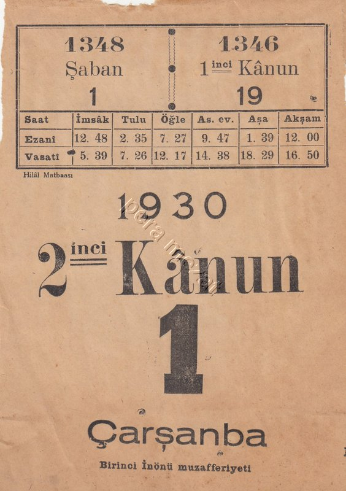
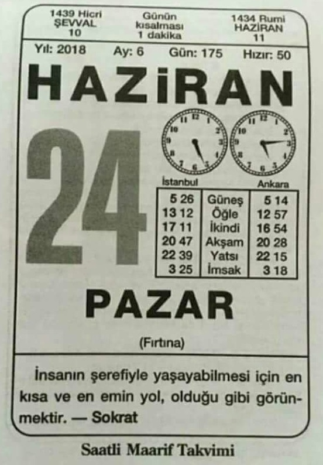

Güneş Saati (3/1/2021) sunumunda üç adet takvim yaprağı gösterirken
"1938'den öncesini bulamadım" demiştim. Yeğenim Celalettin bulmuş,
ek bilgilerle burada sunuyorum.
Takvim yaprakları bize ilginç tarihi bilgiler aktarırken
"vakit" kültürünün zaman içinde nasıl değiştiğini de gösterir.
Lakin bu sayfanın asıl gayesi, temkin surelerini incelemek.
1912-07-28
İmparatorluk dağılırken takvim de dağınık...
"Hangi yıldayız?" sorusunun tam üç cevabı var:
Geleceğin Avrupa olduğunu sezen azınlık 1912 derken
Müslümanlar'a göre yıl 1330,
takvimde yok çünkü herkes bildiği asıl cevap bu!
Resmi tarih ise 15 Temmuz 1328.
Hicri yıl ile eşit başlayan bu tarihe önceleri
Sene-i mâliye denmiş, daha sonra Rumi yıl olmuş.
Henüz ezani saat tedavülde olduğu için, vasati saatlerin
verilmediği bu yaprakta temkin süreleri hesaplanamıyor.

1915-07-16
Üç sene sonra batıya doğru bir adım daha atılmış:
Ezani saatin altında Zevâlî saat var.
Ezani saate göre akşam her gün 12:00'de olduğundan, önceki takvimlerde
gösterilmeyen yeni bir bilgi eklenmiş oluyor.
Bu yaprakla ilgili hesapları okunuşundan izleyelim:

1915-07-16 (aynı yaprağın okunuşu)
Ezani saatin altında Zevâlî saat var,
ayrıca Yatsıdan sonra "Akşam vakti" eklenmiş
Day -30851: 1915-07-16
Loc (41, 29, +2)
04:43 12:10 19:37 hesap
04:38 12:16 19:35 takvim
-5 6 2 temkin

1930-01-01
Bu yaprağın "1 Ocak" olduğunu bugün anlamıyoruz! (Bak: Teşrin-Kânun)
Resmi tarih Avrupa'ya uydurulmuş ama Rumi tarih hâlâ kullanılıyor:
Hicri takvimden 2 yıl, Milâdi takvimden 13 gün geride.
Day -25568: 1930-01-01
Loc (41, 29, +2)
07:28 12:07 16:46 hesap
07:26 12:17 16:50 takvim
-2 10 4 temkin

1953-08-20
Çocukluğumuzda "Çift saatli Maarif Takvimi" revaçta idi.
Saatler iki türlü vakte göre güneşin doğuşunu gösterir.
Ezani saatin rakamları 1950'den önce yasak olan Arapça!
Day -16936: 1953-08-20
Loc (41, 29, +2)
05:17 12:08 18:59 hesap
05:15 12:17 19:01 takvim
-2 9 2 temkin

1974-03-04
Yine çift saat var ama artık kullanan kalmadığı
için Ezani saat bile yeni rakamlara dönmüş.
Day -9435: 1974-03-04
Loc (41, 29, +2)
06:35 12:16 17:57 hesap
06:29 13:26 18:03 takvim
-6 10 6 temkin

1981-02-17
Medeni Kanunun kabulünden 55 yıl sonra Rumi tarih
ve Ezani saatin hâlâ takvimde yer almasına ne demeli?
Bunları kullanan kalmamıştı ama gelenek aynen sürüyordu.
Day -6893: 1981-02-17
Loc (41, 29, +3)
07:56 13:18 18:40 hesap
07:50 13:28 18:47 takvim
-6 10 7 temkin
Bugünkü temkin sürelerine çok yakın

2018-06-24
Yakın zamandan bir yaprak: Ezani saat unutulmuş...
Yine çift saatli ama sağdaki Ankara'yı gösteriyor.
Day 6748: 2018-06-24
Loc (41, 29, +3)
05:31 13:06 20:41 hesap
05:26 13:12 20:47 takvim
-5 6 6 temkin
Öğle vaktinde temkin 4 dakika azalmış

Ref: Hesap sayfası